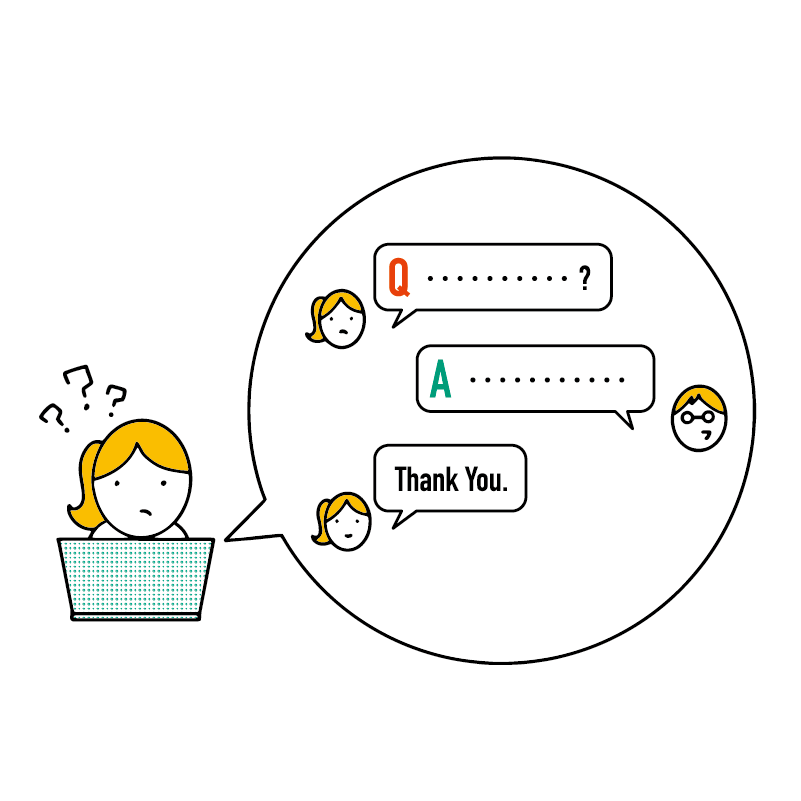

この講座の学び方
講座の読み方
基本的にはスマホやタブレットで N 予備校のアプリを開き、それを見ながらパソコンを操作するとよいでしょう。
また、N 予備校はパソコンでも利用できます。すでにある程度パソコンを利用できる方は、パソコン版を必要に応じてご活用ください。
パソコン版はブラウザで https://nnn.ed.nico/ にアクセスすると利用できます。
講座の進め方
この講座は テキスト（参考書） と 確認テスト で構成されています。生放送や解説動画はありません。
まずは、テキストを最初から順番に進めていきましょう。
パソコンの経験がほとんどない方
この講座では、クリックや電源操作といった基本操作から解説しているのでご安心ください。
経験がほとんどない方は、テキストと確認テストを 1 つずつ進めていくとよいでしょう。
パソコンの経験が少しある方
少しパソコンを触ったことがある方なら、すでに知っている内容もあると思います。たとえば「右クリックとは」「シャットダウンの方法」などを改めて学ぶ必要はないかもしれません。
そういった部分は読み飛ばしてよいです。ただし、「知っているつもりだけど勘違いしていた」「一部しか知らなかった」ということがあるかもしれません。 そのため、知っている内容についても確認テストには取り組み、もし間違っていたらその部分を復習しましょう。
また、この講座は 1 回のステップごとに関連した知識がすべて身につくように構成されています。
たとえば、「電源の操作」を扱う回では、電源オンとシャットダウンの方法といった基礎知識だけではなく、スリープや再起動といったメニューの使い方、いざという時の強制終了の方法なども解説しています。 知っていると思った回の内容でも、読み込んでみると深い知識が身につくかもしれません。
教材の構成について
この講座の構成と、それぞれの章の学習の指針を説明します。
なお、この講座では Windows と Mac の両方に対応しています。
自分の使っているパソコンがどちらか分からない場合、「この講座について」をもう一度ご確認ください。
第 1 章 はじめに
この教材についてのガイダンスです。
第 2 章・第 3 章 基本操作をしてみよう
さっそく、実際にパソコンを操作しながら基本操作を学びます。
マウスやキーボードの操作、パソコンに標準で入っているアプリの扱い方、ファイルの整理などを学びます。この章を学ぶことで、パソコンの基本的な操作が一通り身につきます。
Windows をお使いの方は第 2 章、Mac をお使いの方は第 3 章を読んでください。
第 4 章 パソコンの基本
パソコンの基本的な概念について学びます。
そもそもパソコンとスマホは何が違うのかといった基本事項や、パソコンの仕組み、パソコンを触っていく上で必要な用語などを学びます。
ここで登場する用語は重要なものですが、一気に覚える必要はありません。
すべて覚えきれなくてもいったん次の章に進み、忘れてしまっていたら必要に応じてまた読み返しましょう。
第 5 章・第 6 章 アプリを使ってみよう
パソコンにアプリをインストールし、活用する手順を学びます。第 2 章・第 3 章で学んだことを活かしながら、より実践的なものにつなげていきます。
Windows をお使いの方は第 5 章、Mac をお使いの方は第 6 章を読んでください。
第 7 章 パソコンでもネットを活用しよう
スマホだけでなく、パソコンでもネットを活用する方法を学びます。この章を学ぶことにより、ネットを利用した学校の勉強や趣味などがスムーズに行えるようになります。
第 7 章から先はWindows・Mac ともに共通の章です。
第 8 章 ネットを安全に利用しよう
近年はネットに関連した犯罪も増加しています。
この章では、コンピュータウイルスや詐欺から身を守る方法を学び、より安全にネットやパソコンを利用できるようになります。
第 9 章 Google のサービスを活用しよう
Google（グーグル）のサービスを使えるようになるとネットがさらに活用できます。この章ではアカウントの作成からスタートし、普段の生活だけでなく学校や仕事でも活用できるサービスの使い方を学びます。
特に最近は学校や企業でも Google のサービスを利用しているところが増加しているため、ここで学んだことは実社会で必ず役に立つはずです。
第 10 章 パソコンをさらに活用しよう
この章では、より応用的なパソコンの使い方を学習します。パソコンに他の機械をつないだり、ビデオ会議をしたりする方法を学べます。
第 11 章 おわりに
講座を修了した方に向けたメッセージと、今後の学習のアドバイスです。
第 12 章 付録
必要に応じて読むと役立つ教材です。全員が読む必要はありませんが、自分に当てはまるものがある場合は読んでみるとよいでしょう。
学習のアドバイス
パソコンについては 専門用語 がたくさん出てきますが、それらを一度に覚える必要はありません！少しずつ覚えていけば大丈夫です。
操作についても同様です。慣れない操作を 1 回読んだだけで覚えることは大変だと思います。実際にやってみながら身につけていき、忘れたら再び教材を見て覚え直すという学び方をおすすめします。
この教材は N 予備校に登録している限り、何度でも読み返すことができます。
この講座では、応用的な内容をこのような「コラム」として載せています。
コラムはパソコンについて深く知るために役立ちます。しかしあくまで応用的な内容なので、興味を持ったら読むだけでかまいません。難しい内容も含まれるので、コラムの内容がわからない場合は読み飛ばしても全く問題ありません。
わからないことがあったら
N 予備校のフォーラム を活用しましょう。
どこが分からないのかを丁寧に書くと、他の人が答えやすくなります。
また、操作手順について聞くときは画面の写真（スクリーンショット）があると答えてもらいやすくなります。
それでは、一緒に頑張っていきましょう！